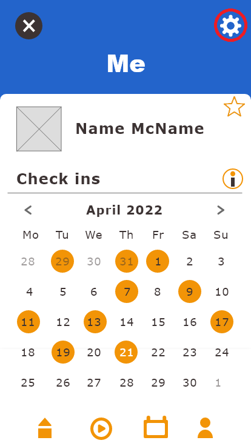
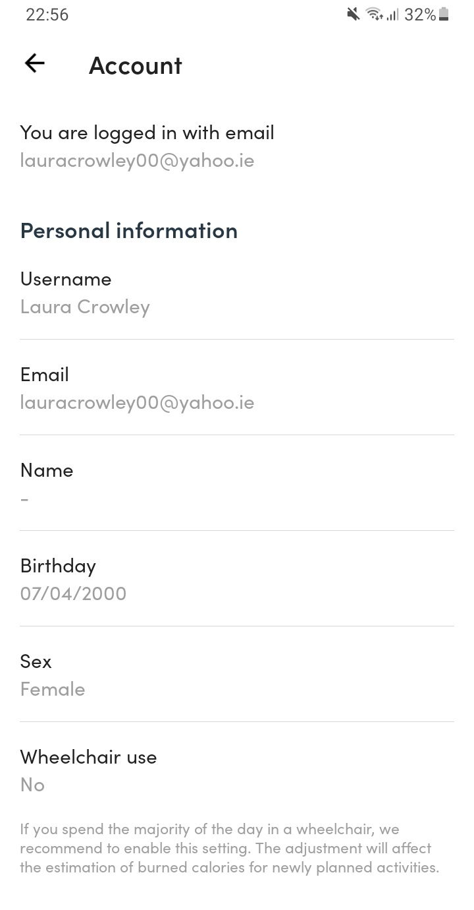
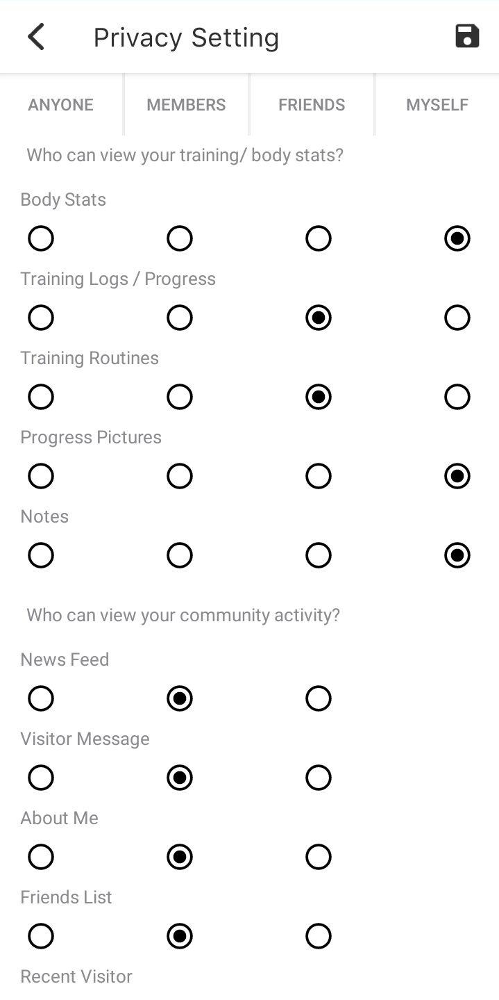
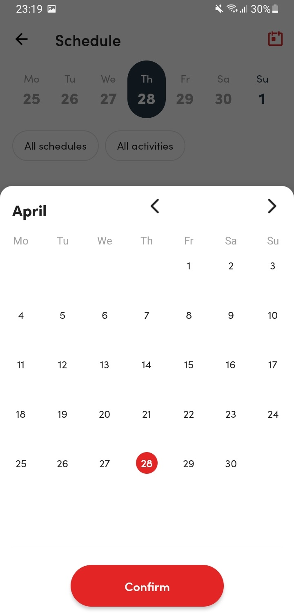
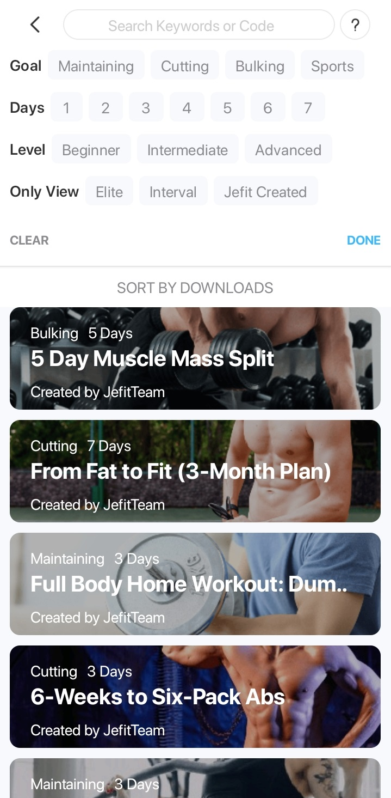
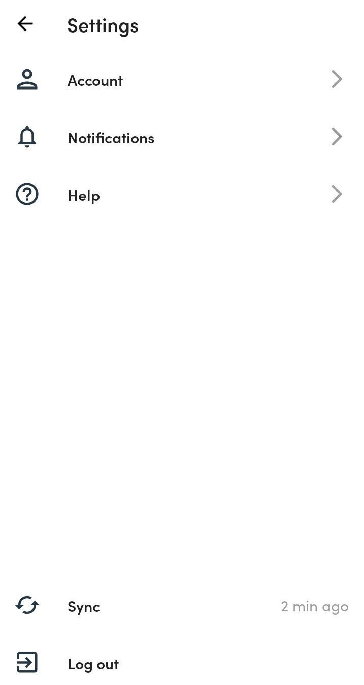
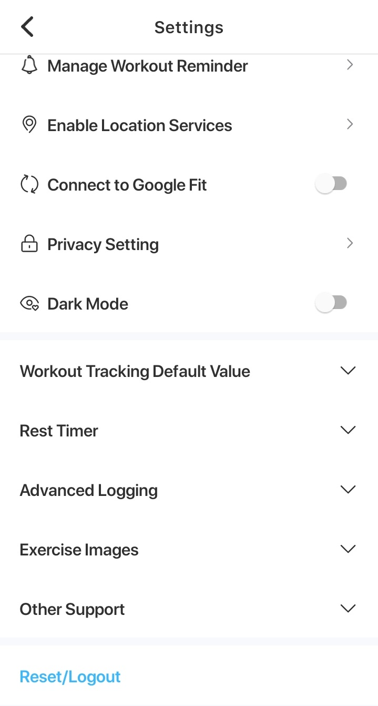
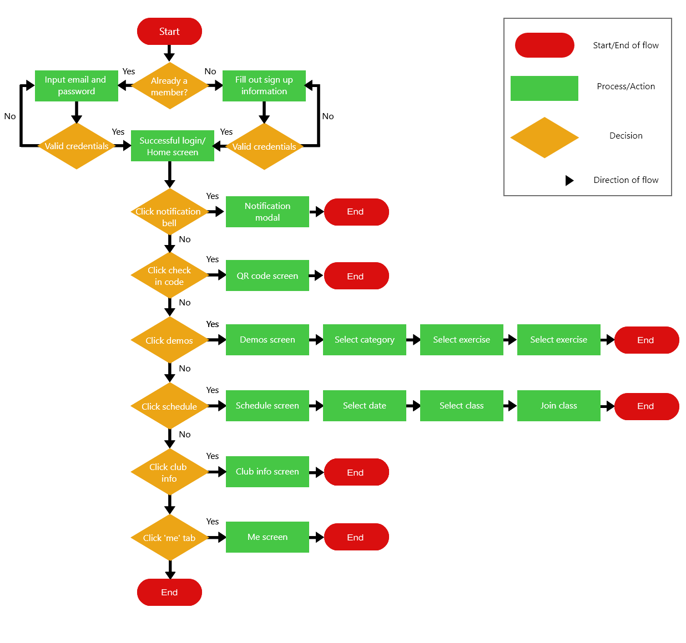

The Prototype
For this assignment I decided to design a mobile application, specifically, I created a gym membership-based application. The main users for this application would be the gym members; certain information gathered from this mobile application would be accessible by the gym staff/admin through their associated website e.g., member names, email, etc.
Here is the prototype link via Adobe: Click me!
The Questions
Functionality
I would say the main function of my application is to scan into the gym when you arrive, due to the fact the other features included in the mobile application could also be accessed on a browser-based application, and one would be created to go hand in hand with the mobile application in a real scenario.
Experience
There are many experiences offered to the user such as: the ability to record/monitor the number of days they’ve gone to the gym based on them scanning in when they arrive (a necessity at the facility), to record the duration spent there if they chose to scan out when they leave, the ability to make in-app notes about their work out, to get achievements, access club info, to sign up for classes at the gym, as well as the ability to watch demos of various exercises they may wish to try.
Data Types
One data type my application collects is when the user scans their mobile QR code at the gym when they arrive, and if they scan out too (optional). My application collects the date and time and based on this, in the user's profile, the day and time they scanned in is logged and displayed, and if they chose to scan out that is also logged and displayed, as well as the duration spent being calculated and displayed.
Interactions
There
Accessibility
Some aspects of my application do not need internet to run e.g., the QR code, the user accessing and altering their profile, and accessing the club info. Other aspects such as logging in/signing up to the app, watching demo videos, viewing and joining classes from the schedule, and receiving notifications.
Technologies
A technology that is required to fully satisfy my application's functionality would be like the QR scanner in the gym. As well as this, the accompanying gym website is needed to fully satisfy the apps functionality e.g., gym staff would add new classes to the schedule through the website and this would be viewable and then joinable from the mobile app for members.
Devices
The mobile application would have an accompanying gym website that it would be connected to. Through the website the user may also access their profile, the club info, make and manage class bookings, as well as see their notifications.
Design steps & Visual Aspects
The main colours used in my app design are blue, as I found it to be a popular colour associated with other fitness-related apps, and orange as it is blue’s complementary colour. Buttons that feature the orange accent progress the user through the system, while grey buttons send the user back through the application. In my design, I stuck with commonly used symbols to keep things simple for the user e.g., a bell icon for notifications, arrows to progress through the application, a house icon for the home screen, a play button for videos, ‘i’ icon for information etc. I used the same font in my design to keep a consistent feel to the application.
Scrolling would be implemented where necessary e.g., on the demo categories page, as opposed to pagination. Also, to save the user from scrolling endlessly and to increase usability, a search bar is featured in the demos section to help them quickly find the exercise they are looking for to avoid wasting time in the gym.
I ordered the home screen buttons by the category I thought would be used most often, first being the QR code to regularly check into the gym, next being the demo videos, third the gym schedule, and lastly the club info. I refined the ‘me’ section to the last icon in the tab bar as this is where it is typically found in other mobile applications.
I included some achievements the members can work towards. Adding a game element to the app, or gamification, can make an activity seem more interesting and may encourage interaction (Oxford Dictionary)
User scenarios & simple flow diagrams
Scenario One
The following is a scenario where the user, already a member, wishes to watch an exercise demo, shown through a simple wireframe flow.
Scenario Description
Normal flow of events:
- Gym member selects log in
- Member inputs their email and password
- Member select demo button
- Member selects glutes button
- Member selects hip thrust
- Member watches video
Alternate/exceptional flows:
2a. Incorrect email and/or password
3a. Member select demo icon from tab bar
4a. Member searches for glutes in search bar and selects
5a. Member searches hip thrusts in search bar and select
Scenario Two
The following is a scenario where the user, already a member, wishes to watch an exercise demo, shown through a simple wireframe flow.
Scenario Description
Normal flow of events:
- Member selects schedule button
- Member selects class they wish to join
- Member selects join button
Alternate/exceptional flows:
1a. Member can’t find class
1b. Class not on selected day
2a. No availability, member can’t join
2b. Member has missed class, member can’t join
Application Comparision
As well as my own UX design, I will also look at a mobile application called Virtuagym and JEFIT. Unfortunately, since my design is centered around being a member of a gym I am limited when it comes to looking at similar apps i.e. I can’t access other gym-based applications as I am not a member. Luckily I am a member of one gym and thus can use Virtuagym in my comparison, for the second real life example required I found an application that offers exercise demos but isn’t tied to a gym as it is a trait shared with my UX design. Due to these discrepancies, as well as the fact I have built upon my app so it is not identical to ones I’m aware of/offers more interactions, I can’t give four of the exact same activities that can be performed.
Four activities that can be preformed
1. Gym Check In
My UX
To check into the gym the user must select the check in code button on the home screen, this brings up the QR code which is then scannable at their gym location.
Virtuagym
To check into the gym the user must select the check in code button on the home screen, this brings up the QR code which is then scannable at their gym location.
JEFIT
This is not a feature offered by this application
2. Join classes
My UX
To join a class the user may select the schedule button on the home screen, or the schedule icon on the tab bar. This will bring up the schedule where they can scroll to find a class on a specific date, or they may open the monthly calendar in the top right corner, or they may choose to click the filter icon to filter by classes. Once the user finds a class they wish to join they can click on it, another screen opens displaying more in-depth details and a join button. Assuming there is available space, the user is then added to the class list.
Virtuagym
To join a class the user must select the schedule button on the home screen. This will bring up the schedule where they can find scroll to find a class on a specific date, or they may open the monthly calendar. There is also the option to filter by class but the typical filter iconography isn’t used. Once the user finds a class they wish to join, they can click on it. Some classes require ‘Small Group PT credits’ to join, whereas some aren’t restricted to this requirement.
JEFIT
As JEFIT is not directly linked to a gym this is not a feature offered by this application
3. View demos
My UX
To watch a demo the user may select the demo button on the home screen, or the demo icon on the tab bar. The user is taken to the demo categories page where they have the option to scroll and find the muscle group they want, or they can search for it. After this they can shown the exercises for that specific group. Again, the user can scroll to find the exercises they want or search for it. Once selected they are taken to a screen that displays a demonstration video of the exercise, as well as there being written instructions below. These videos would be made by the gym employees and feature verbal instructions throughout meaning the user need not read alongside watching the video, they may listen whilst trying to mimic the exercise, though the option to read along is always there.
Virtuagym
This is not a feature offered by this application
JEFIT
To get a demo the user must select the exercises icon in the tab bar. They are taken to a screen that displays the different muscle groups, though there is no search option. Once the user selects a muscle group, they are taken to a page that shows a list of exercises. On this page, the user may choose to filter the exercises by equipment or make use of a search bar featured at the top. There is also a ‘view from’ section that includes my fav, recent, and custom options. Once the user selects an exercise there is a simple gif displaying the exercise, if you click ‘play video’ you are prompted to buy a subscription to the application. Below the gif is a set of written steps the user can follow, and tips for the exercise.
4. View notifications
My UX
To view notifications the user can click the bell icon directly from their home screen.
Virtuagym
To view notifications the user must click the profile icon in the tab bar. On their profile they can then select the notification bell.
JEFIT
To view notifications the can either go to the discover tab where they will bring the bell icon, or the user can profile icon in the tab bar and on their profile, they can then select the notification bell.
Evaluations with screenshots
What information can the user control/change?
My UX
The user can control and change their own account information

Virtuagym
The user can control and change their own account information

JEFIT
The user can control and change in-app workout plans as well as control and change their own account information.

How does the application lead the user?
My UX
"Help" / "Learn More" section not show in UX prototype though it would be featured in the settings tab. There is an information icon featured by the check-ins section of the user profile to help explain that particular feature of the application.

Virtuagym
"Help" section is featured in the settings. From here the user can opt to ask a question, report an app problem, request an app feature, or write a review.
JEFIT
"Help" / "Learn More" sections not featured
Can the user make changes in the interface?
My UX
Doesn't allow the user to make changes in the interface
Virtuagym
Doesn't allow the user to make changes in the interface
JEFIT
Application allows the user to change the privacy settings in the app, i.e., who can view the user’s training/body status, and their community activity.

Is the interface "inductive" or "deductive"?
My UX
All of these apps mainly operate on the presumption that the user understands standard
iconography used in applications e.g., a house signifying the home screen, or shoulders and head
signifying the profile.
My UX design has one inductive feature, that being the information modal that pops up when the
information icon is pressed (which is itself a deductive feature) to explain the check ins
section.
Virtuagym
All of these apps mainly operate on the presumption that the user understands standard iconography used in applications e.g., a house signifying the home screen, or shoulders and head signifying the profile.
JEFIT
All of these apps mainly operate on the presumption that the user understands standard iconography used in applications e.g., a house signifying the home screen, or shoulders and head signifying the profile.
Does the application offer a "progressive disclosure"?
My UX
This application offers progressive disclosure with its use of filter icons that when clicked open up to show the filter option, as well as the calendar icon that when clicked opens the calendar modal.

Virtuagym
This application offers progressive disclosure also in its schedule filter and calendar.

JEFIT
JEFIT offers progressive disclosure through the various tabs you can skim through to find exercises. As well as a search tab on the workout page that when clicked expands to show a wide range of search options.

Does the application involve an Authorization process?
My UX
To log in the user must enter their email and password. To logout the user must go to their profile, then the settings and logout from there, where they will be asked if they are sure they want to log out.

Virtuagym
To log in the user must enter their email and password. To logout the user must go to their profile, then the settings and logout from there, where they will be asked if they are sure they want to log out.

JEFIT
To log in the user must enter their email and password. To logout the user must go to their profile, then the settings and logout from there, where they will be asked if they are sure they want to log out.

Design Principles
A design principle I followed for signing up includes emails being used as usernames. Although in my sign-up section the user is asked for their name, this is only for display purposes in the app and would be displayed alongside the unique identifier i.e., their email address. I did this because “email addresses are always unique and are easier to remember even” (Vora, Pawan 51). Another I followed is grouping information, although not much information is required to sign up I still grouped information according to their functions: the sign-up details, and the personal details e.g., password, and date of birth (Vora, Pawan 22). I made use of embedded labels due to the fact I only have a few input fields (Vora, Pawan 26) I did forget to add “required field indications” in my prototype, but they would be added to all the fields in the initial sign up page. Error messages would also be included if the user were to enter incorrect information.
I decided not to include the typical captcha seen in other applications due to the fact when signing up the user must enter a gym code, this is something they would have received into their email after paying to become a member, and it is individual to thus this isn’t going to be something an automated agent couldn’t correctly fill in. Also, the email entered must be the one that is already associated with their gym membership after payment, something an an automated agent also cannot fake.
I made use of single-field inline editing for the notes section of my application, this is where the user can make notes about a workout they had on a particular day and review it later if necessary. Using single-field inline editing allows the user to stay on the same screen and view the other details above the notes section, which may aid them in what they decide to write (Scott, Bill and Neil Theresa 4).
I used two types of overlays in my app, a dialog overlay which is used to show the calendar in the schedule section of my application, and a detail overlay which is used to display information about check-ins in the ‘me’ section of my application; both of which make use of the lightbox effect i.e., dimming down the background behind the overlay (Scott, Bill and Neil Theresa 107-118). Although not shown, the filter option in the schedule section of my application would make use of check boxes that the user can use to select which class they which to filter by.
Where required the majority of my application uses virtual scrolling to navigate, e.g., scrolling through the demo categories list. But for signing up, I opted for pagination; this was done to section off certain elements of information i.e., account information, and personal information, and to not overwhelm the user by seeing a vast number of required inputs on one screen (Scott, Bill and Neil Theresa 137).
The search bars featured in the demos section would make use of the auto complete pattern i.e., As the user types input into a field, a drop-down menu of matching values is displayed (Scott, Bill and Neil Theresa 253). I did this because searching is easier and more efficient than navigating the application (Vora, Pawan 144)
Workflow Diagram
A workflow diagram representing all the functionalities and interactions my product offers
References:
Fowler, Susan, and Victor Stanwick. Web Application Design Handbook. Elsevier
Gezondheidszorg, 2004.
“Oxford Learner’s Dictionaries | Find Definitions, Translations, and Grammar Explanations at Oxford
Learner’s Dictionaries.” Oxford Learner’s Dictionary, Oxford University Press, 2022,
www.oxfordlearnersdictionaries.com.
Scott, Bill and Neil, Theresa. Designing Web Interfaces: Principles and Patterns for Rich
Interactions. 1st ed., O’Reilly Media, 2009.
Vora, Pawan. Web Application Design Patterns (Interactive Technologies). 1st ed., Morgan
Kaufmann, 2009.
Header image attribution: Image by Active Fitness